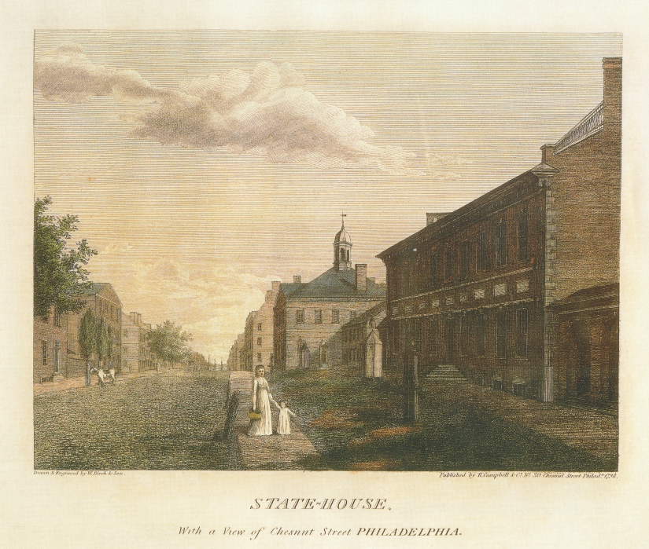

Directions: Fill in the chart as we study each question the Convention faced. Keep this page in your notebook. You will use it again on the review day before the unit test.

| The question | The proposals on the table | The settlement adopted | The price, or the part left open |
|---|---|---|---|
| Representation | |||
| The count | |||
| The executive | |||
| Rights and the people's name |
The summer in one sentence. Finish this sentence in your own words, using at least two rows of the chart as evidence. The Constitution held together because..., and the bill for that holding came due in...
| The question | The proposals on the table | The settlement adopted | The price, or the part left open |
|---|---|---|---|
| Representation | The Virginia Plan apportioned both houses of the legislature by population. The New Jersey Plan kept one house with one vote for every state. | The Great Compromise, adopted July 16, 1787 by five states to four: the House apportioned by population and elected by the people, the Senate holding two members from every state. | A double nature written into the frame, a people in one house and states in the other. Equal Senate votes for states of very unequal population remain the design's standing argument. |
| The count | Southern delegates counted the enslaved as people for seats and as property for taxes. Northern delegates pressed the tax count against the seat count. | The Three-Fifths Compromise: each enslaved person counted as three fifths of a person for representation and direct taxes alike, borrowed from a Confederation tax formula of 1783. | The count raised the slave states' House seats and their weight in the electoral college. The Atlantic slave trade was protected from prohibition until 1808, escapees were made returnable on claim, and slavery was named nowhere in the document. |
| The executive | Choice by the legislature, as the Virginia Plan proposed, against direct election by the people of a continent who could not know distant candidates. | Election by electors chosen in the states, their number equal to each state's members of Congress, inside a government divided by the separation of powers and laced with checks and balances. | The framers' stated reasons sat beside an unstated effect: the three fifths count raised the slave states' weight in choosing every president. The presidency was also left strong on the strength of Washington's expected occupancy of it. |
| Rights and the people's name | George Mason's motion of September 12, 1787 for a committee to prepare a bill of rights, against the argument that the states' own declarations of rights were protection enough. | The Convention refused the motion with no state voting in favor. The Committee of Style opened the document with We the People of the United States, and thirty nine delegates signed on September 17. | Mason, Gerry, and Randolph declined to sign, and the missing bill of rights became the ratification fight's central charge, answered in the next lesson by the promise of amendments. |
The summer in one sentence. Strong answers hold the settlement and its price in one thought. The Constitution held together because the delegates split every question that could have broken the union, representation between people and states, the count between seats and taxes, the executive between Congress and the people, and the bill for that holding came due in the currency the documents name: political weight built on enslaved people who could not vote, a trade in human beings protected for twenty years, and a bill of rights the new government had to be forced to add.